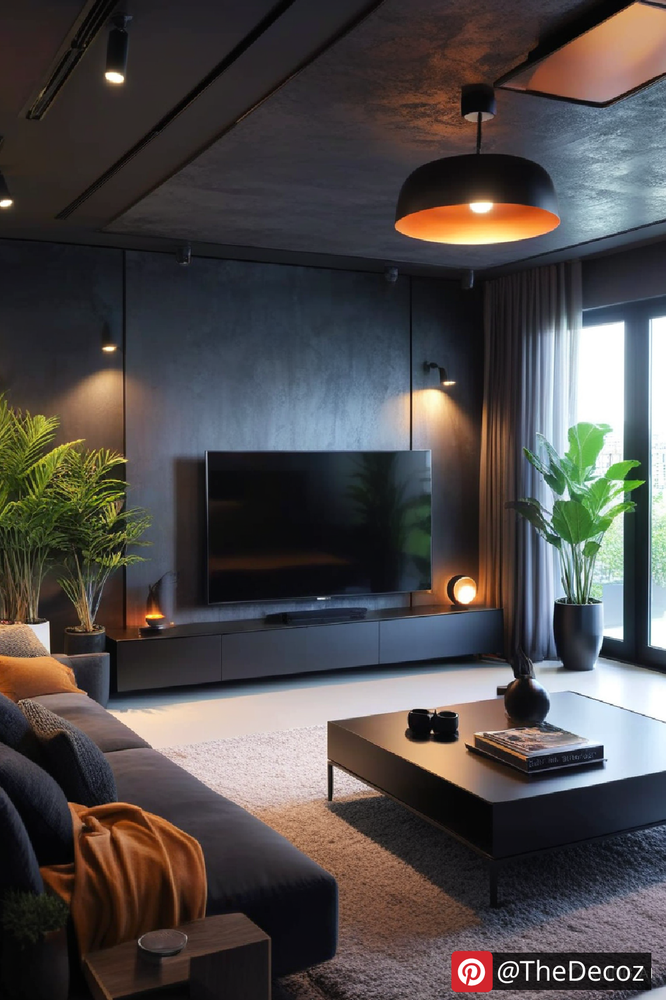
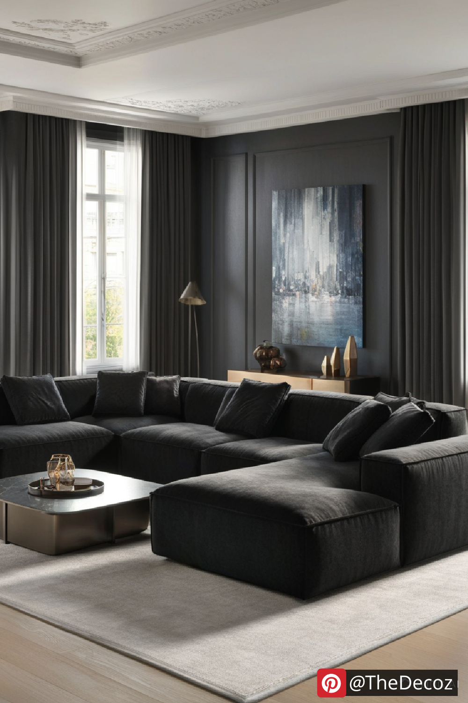
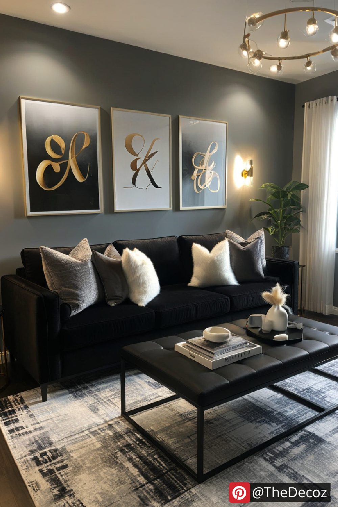
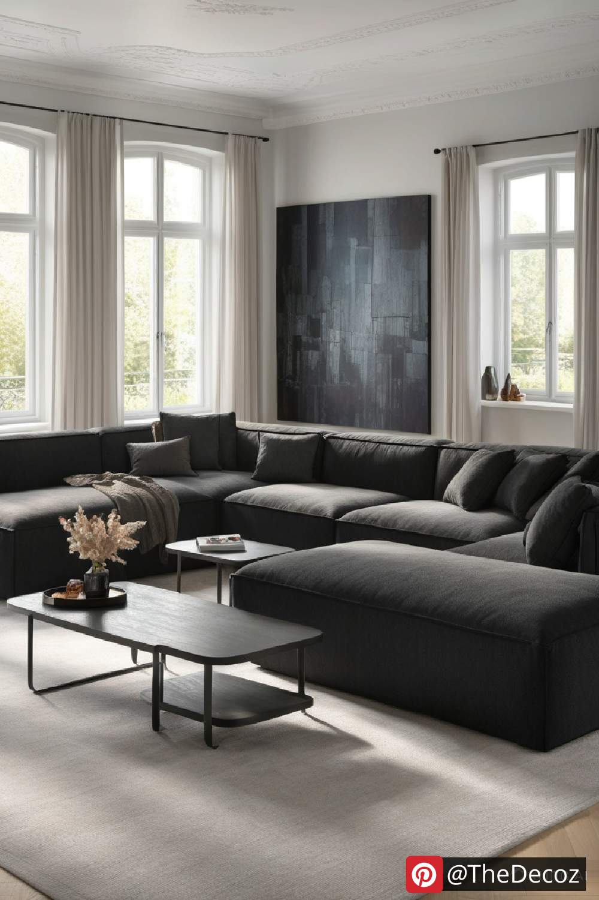
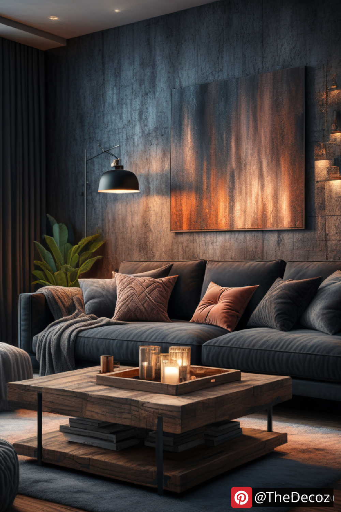

A well-designed living room serves as the heart of the home, and incorporating black into your decor can create an atmosphere of sophistication, drama, and modernity. Whether you prefer a minimalist aesthetic or a bold, eclectic style, black living room decor offers endless possibilities. In this article, we’ll explore how to master black decor while maintaining balance, warmth, and comfort.
Black is a powerful color that exudes elegance and versatility. It pairs seamlessly with various textures, materials, and accent colors, allowing you to personalize your space effortlessly. Here are a few reasons why black is a great choice for your living room:
Timeless Appeal – Black never goes out of style and remains a classic choice in interior design.
Creates Depth and Contrast – Dark tones enhance architectural features and highlight accent pieces.
Versatile and Adaptable – Works well with modern, industrial, minimalist, and even traditional styles.
Enhances Coziness – When paired with the right lighting and textures, black can create an inviting ambiance.
If you want to make a dramatic statement, consider painting your walls black or using black wallpaper with textured patterns. To prevent the room from feeling too enclosed, balance dark walls with lighter furniture, metallic accents, or mirrored surfaces.
2. Black Furniture for a Chic LookInvesting in black furniture such as sofas, coffee tables, or bookshelves can anchor your space with a touch of refinement. Opt for luxurious materials like velvet, leather, or matte finishes to elevate the overall aesthetic.
3. Layer Textures for DepthTo avoid a flat and monotonous look, layer different textures such as soft rugs, plush cushions, and wooden or metallic elements. For example, a black leather sofa paired with a knitted throw and a shaggy rug creates a visually appealing contrast.
If you prefer a subtler approach, incorporate black through accent pieces such as vases, artwork, lamps, or throw pillows. This method allows you to introduce black decor without overwhelming the space.
Since black can absorb light, ensuring adequate lighting is crucial. Use a mix of ambient, task, and accent lighting to brighten up the space. Consider pendant lights, floor lamps, or wall sconces to enhance the ambiance.
Black pairs beautifully with a variety of hues. Some stunning combinations include:
Black and White: A classic monochromatic scheme that exudes modern elegance.
Black and Gold: Adds a touch of luxury and opulence.
Black and Wood Tones: Creates warmth and a natural balance.
Black and Jewel Tones: Deep greens, blues, or burgundy add richness to the decor.
Black living room decor is a bold yet sophisticated choice that can transform your space into a stylish sanctuary. Whether you opt for an all-black design or use it strategically with accent colors, the key is to maintain balance and harmony. By combining different textures, thoughtful lighting, and complementary tones, you can create a black-themed living room that feels both luxurious and inviting.
Embrace the elegance of black decor and elevate your living space with confidence!
    